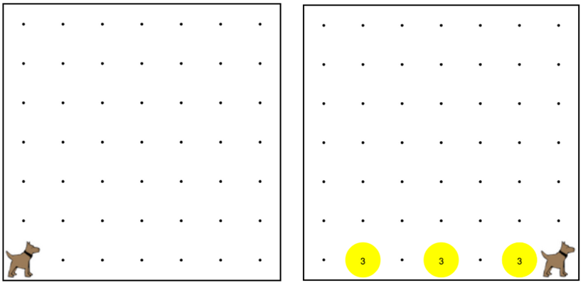

Karel is the waiter. He needs to deliver a stack of pancakes to the guests on the 2nd, 4th, and 6th avenue. Each stack of pancakes should have three pancakes. 卡雷爾是服務員。他在送一疊煎餅給客人2號，第4和第6大道。煎餅的每個堆棧應該有三個煎餅。 Create a function called makePancakes() to help karel solve this problem. The world should end up exactly as shown here. 創建一個名為做煎餅（）的函數來幫助卡雷爾解決這個問題。世界應該結束了完全相同，如下所示。

move(); 移動(); turnLeft(); 左轉(); putBall(); 放球(); takeBall(); 拿球();
"Defining a function" is 定義功能” teaching karel *how* to do it 教學卡雷爾**怎麼做 "Calling a function" is “調用函數”的 saying "hey karel, do it!" 說“哎卡雷爾，做到這一點！” You only "define" a function once. 只有你“定義”功能一次。 Then you can "call" it many times 然後你可以“呼叫”了很多次
// "Defining the function" 定義函數 function turnRight() { 功能右轉（）{ turnLeft(); 左轉(); turnLeft(); 左轉(); turnLeft(); 左轉(); }
// "Calling a function" 調用函數” turnRight(); 右轉（）; turnAround(); 轉身（）;
// "Defining a function" “定義的函數” function turnAround(){ 功能掉頭（）{ turnLeft(); 左轉(); turnLeft(); 左轉(); } // "Defining a function" “定義的函數” function moveTwice(){ 功能移動兩次（）{ move(); 移動(); move(); 移動(); } // "Calling a function" 調用函數” turnRight(); 右轉（）; turnAround(); 轉身（）;